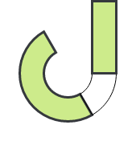

Minimal. Offline. Local.Jaypore CI is a minimal single-binary CI system, that can run offline on your own laptop.
It supports complex workflows, has a web interface, and has collaboration via git.
Download binaries
Download a binary of your choice and move it to /usr/bin/git-jci. Git will automatically start picking up the command and you can start running as git jci web.
Support Jaypore CI
While this software is provided under the MIT License, if you are using this software for a commercial purpose (e.g., within a company, for a client project, or a paid service), please consider supporting the project by purchasing a Commercial License.
Your support allows for continued maintenance and new features.
README.md for docs
Go through the README.md file to see how things work. A simple workflow is:
git jci runexecutes your pipeline. Run this mannually, or via pre-commit, or cron as shown below.git jci webruns a web server, browse the CI results locally.git jci push/pullsyncs refs with your remotes.git jci cron syncsyncs your cron spec with system cron so that you can run midnight builds for example.
Bugs / Ideas / Support / Discussions
Talk to us on Help Desk for any problems you face.
Please email us at support@midpathsoftware.com for everything else!